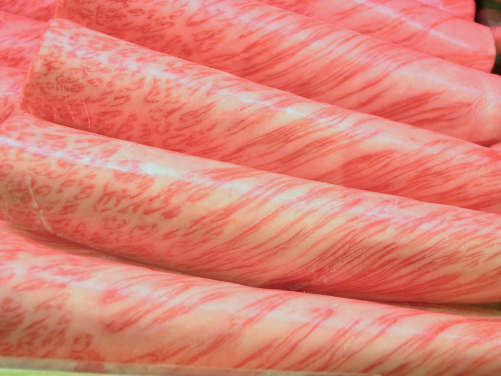

근내지방도 (Marbling Score)

쉽게 풀면
고기 속에 하얀 지방이 얼마나 촘촘히 퍼져있는지를 보여주는 점수. 근내지방도는 고기를 잘랐을 때 보이는 하얀 지방 무늬가 얼마나 촘촘하고 고르게 퍼져 있는지를 점수로 매긴 것으로, 이 점수가 소고기 가격을 크게 좌우한다. 마블링점수는 등급판정사가 등심 단면을 표준 사진과 비교해 매기는 방식이라, 사람의 눈에 의존하는 만큼 판정 조건 통제가 중요하다.
왜 중요한가
근내지방도는 등심 단면에 나타난 지방 침착의 양과 분포를 표준 사진과 대조해 점수화한 것으로, 소고기 육질 등급을 가장 크게 좌우하는 항목이자 비육 사양과 육종 연구의 핵심 결과 변수이다.
근내지방 함량과의 상관 검증, 영상 분석 기반 객관 판정, 근내지방도와 소비자 관능 만족의 관계가 연구되며, 근내지방도 개량은 한우·와규 육종의 중심 목표였다. 근내지방도는 소고기 등급 판정에서 가장 큰 비중을 차지하는 항목이라, 이 형질 하나의 개량 여부가 한우 농가의 수익성에 직접적인 영향을 미친다.
계산과 범위
- 마블링 점수(근내지방도)는 등심 단면에서 보이는 지방 교잡의 정도를 표준 사진과 견주어 등급 번호로 매긴 순서 척도이다. 숫자가 클수록 지방이 많이 교잡된 것이다.
- 나라마다 척도가 다르다. 일본의 BMS는 1~12, 미국 농무부(USDA)는 ‘거의 없음(practically devoid)’에서 ‘풍부(abundant)’까지 9개 마블링 단계, 한국은 표준 사진을 쓰는 번호 체계를 쓴다. 번호가 같아도 같은 지방 함량을 뜻하지 않는다.
- 번호 사이의 간격이 같다는 보장이 없는 순서 척도이므로, 평균을 내는 것은 편의상 하는 일이고 중앙값·분포를 함께 보는 편이 안전하다.
- 화학분석으로 얻는 근육내지방함량(%)은 연속 변수이고, 점수는 눈으로 보는 판정치이다. 둘의 상관은 높지만 같은 값이 아니다.
USDA 마블링 단계는 많은 쪽부터 풍부(Abundant)·약간 풍부(Slightly Abundant) 등으로 불리며, 최근에는 ‘매우 풍부(Very Abundant)’가 프라임 등급에 포함되도록 넓혀졌다. 2024년 5월 15일 미국육과학회(AMSA)와 USDA-AMS가 낸 새 마블링 카드에는 ‘중간 정도로 풍부(Moderately Abundant)’ 이미지가 추가되고 ‘풍부’와 ‘매우 풍부’의 이미지가 처음 실렸다. 일본의 BMS는 4분할한 갈비 단면의 마블링을 색 견본과 비교해 1~12로 판정하며, 지방의 굵기와 결도 중요하게 본다. 예를 들어 BMS 11은 굵은 마블링이면 내려가고 가늘고 깃털 같은 마블링이면 12로 올라갈 수 있다. 일본 심사원은 3단계 인증을 거치며 최고 단계에 이르는 데 10~12년이 걸리기도 한다.
해석 기준
가상의 한우 도체 12마리의 근내지방도 번호이다. 5, 6, 4, 7, 8, 6, 5, 9, 3, 6, 7, 5. 계산한 결과는 다음과 같다.
| 통계량 | 값 |
|---|---|
| 평균 | 5.92 |
| 중앙값 | 6 |
| 표본 표준편차 | 1.68 |
| 번호 7 이상 비율 | 4/12 = 33.3% |
‘7 이상’ 같은 기준선은 등급 기준을 어떻게 정하느냐에 따라 달라지므로, 논문에서는 사용한 등급 기준(연도·기관)을 함께 적어야 한다. 이 기준선은 이 예를 위해 정한 값이며 공식 등급 경계가 아니다.
점수를 국가 사이에 바꿀 때는 호주 AusMeat 9가 일본 BMS 3에 해당한다는 일본 식육 등급 협회(Japan Meat Grading Association)의 설명처럼 대응이 매우 어긋난다는 점을 유의한다. 마블링의 효과도 과장하지 않는다. 마블링은 근섬유 근처에 쌓인 지방이며 3~7% 정도에서 맛·육즙·연도를 약간 높일 수 있으나 전체 기호성에 기여하는 정도는 5%를 넘지 않는다는 설명이 있다. 성인 포유류 근육은 약 75%가 수분, 19%가 단백질, 2.5%가 근내지방이다.
보고 방법
- 점수 차이를 지방량 차이로 바로 읽기: 번호가 1 오를 때의 지방량 증가는 구간마다 다를 수 있다.
- 나라 간 직접 비교: BMS 8과 USDA의 특정 단계는 사진과 기준이 달라 일대일로 바꿀 수 없다.
- 판정 조건 무시: 절단 후 경과 시간, 조명, 도체 온도, 판정자에 따라 값이 달라질 수 있다. 판정자 간 일치도(예: 가중 카파)를 함께 보고하면 신뢰도를 보여 줄 수 있다.
- 높을수록 좋다는 전제: 소비자 선호는 시장·문화에 따라 다르고, 일정 수준 이후에는 증가분이 작아진다는 보고도 있어 선호의 방향을 가정하지 않고 변수로 다루는 편이 안전하다.
논문에서는 이렇게 쓰입니다
실제 논문에서
국내 학술지 논문에서 이 용어가 쓰인 문장을 그대로 옮겼다. 제목·학술지·연도와 원문 링크를 함께 적었다.
“등지방두께, 배최장근단면적, 도체중 및 근내지방도의 경락가격 기여도는 각각 2.66, 0.32, 3.48 및 93.54%였다.”
한우의 경락가격에 대한 요인별 기여도 분석, 한국축산학회지, 2012 · KCI 한국학술지인용색인 · 원문 보기 ↗
“총가격의 R-Square가 0.82로 나타났으며, 근내지방도와 도체중의 기여도는 각각 46.25%와 52.38%였다.”
한우의 경락가격에 대한 요인별 기여도 분석, 한국축산학회지, 2012 · KCI 한국학술지인용색인 · 원문 보기 ↗
예시 문장
아래 예문은 용어의 쓰임을 보이려고 만든 것으로, 실제 논문 문장이 아니다.
마블링(근내지방도)이라는 형질에 대해서도 유전능력평가를 실시해 육종가를 계산했다는 내용이다.
이는 마블링점수가 육질 등급 판정뿐 아니라 소비자 기호도 예측에도 활용될 수 있음을 시사한다.
조금 더 깊게 보면
근내지방도는 육안 판정이어서 판정자 간·판정 조건(조명, 절단 후 경과 시간, 도체 온도) 간 편차가 있고, 절단 직후에는 지방이 덜 드러나 시간이 지나면서 점수가 올라가는 경향이 있어 판정 시점 통제가 필요하다.
근내지방도와 맛의 관계는 일정 수준까지는 뚜렷하지만 그 이상에서는 둔화되고 시장에 따라 과다 지방을 기피하므로 높을수록 좋다는 전제는 시장 문화에 의존한다. 척도와 기준 사진은 국가마다 달라 미국·일본·호주·한국의 점수를 직접 대응시킬 수 없다.
근내지방도와 실제 근내지방 함량 사이의 상관은 높지만 완전히 일치하지는 않아, 같은 점수라도 개체나 품종에 따라 실제 지방 함량에 차이가 있을 수 있다는 점이 육종 목표 설정 시 함께 고려된다.
주의할 점
근내지방도가 높을수록 반드시 건강에 좋은 것은 아니며, 소비자 기호와 영양적 측면을 함께 고려해야 한다.
마블링 점수가 높을수록 지방 함량도 높아지므로, 건강한 식습관을 고려한다면 마블링만이 아니라 부위별 지방 함량도 함께 살펴야 한다.
헷갈리기 쉬운 용어
| 용어 | 한 줄 설명 | 성격 |
|---|---|---|
| 근내지방도(마블링 점수) | 단면의 지방 교잡을 표준 사진과 견준 등급 번호 | 순서 척도(눈 판정) |
| 근육내지방함량 | 근육 조직 내 지방의 실제 함량(%) | 연속 변수(화학분석) |
| 육질등급판정 | 근내지방도·육색·지방색 등을 종합해 매기는 등급 | 종합 등급 |
참고 문헌
- Savell, J. W., & Cross, H. R. (1988). The role of fat in the palatability of beef, pork, and lamb. In Designing Foods: Animal Product Options in the Marketplace. National Academy Press.
- Platter, W. J., Tatum, J. D., Belk, K. E., Chapman, P. L., Scanga, J. A., & Smith, G. C. (2003). Relationships of consumer sensory ratings, marbling score, and shear force value to consumer acceptance of beef strip loin steaks. Journal of Animal Science, 81(11), 2741–2750.
- American Meat Science Association. New prime marbling cards for beef quality grading: a collaborative effort by AMSA and USDA-AMS (2024).
- Beef Central (n.d.). Japanese beef marbling standard (BMS).
- Wikipedia contributors (n.d.). Marbled meat. Wikipedia.
표의 기준값은 위 문헌에 따른 관례이고, 분야·학술지마다 기준이 다를 수 있다.